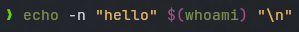

Completed Configuration
Overview
You probably already have a default ~/.zshrc file, with some things you’ve had to add when installing other programs. You might also have some existing aliases or environment variables that you want to preserve. When adopting all (or part) of this configuration into your own file, you will want to be sure not to break anything you already have.
I also want to cover a few zsh plugins that I really like. Installing and managing plugins is pretty easy, and you likely won’t need very many. But there are plugin managers and package managers you could use to install and configure plugins and color themes for you.
Completing Your Configuration
The included file zshrc.zsh is the combined configurations from every section in this module. We didn’t cover every single line that appears in this file, but every line is explained in the example zsh files included with all of the sections so far.
You can use this configuration file to replace/augment your existing ~/.zshrc file.
You may already have some of the following:
- Custom variables and aliases
- Modifications to
$PATH - Commands for integration with other apps, like
pyenv,nvm, etc. These are usually in the form ofsourceor.commands, possibly withinifconditional sections.
To merge the contents of the two files:
- Make a backup copy of your existing
~/.zshrcfile. - Copy this zshrc.zsh file to
~/.zshrc, replacing any existing file. - Go through your existing file, compare line-by-line to the example file.
- Copy the lines that are missing to the bottom of your new
~/.zshrcfile.
Things you may want to customize:
- The
EDITORvariable should point to your preferred CLI text editor. - The prompt-string (
$PS1). - The
git/VCS format strings (zstyle ':completion:'), especially the icons. - Enable
vimoremacskeybindings (bindkey -v/bindkey -e).
Some Things You May Already Have
If you are doing regular development already, you may have made changes to your zshrc file to support various tools and programs already. Here are a couple of common ones you want to be sure to preserve. The examples are from a Macbook environment.
# any custom additions to your PATH, or things like PYTHONPATH
export PATH="$PATH:..."
# homebrew integration
eval "$(/opt/homebrew/bin/brew shellenv)"
# pyenv integration for managing isolated python installations
export PYENV_ROOT="$HOME/.pyenv"
export PYTHON_BUILD_BUILD_PATH="$HOME/.pyenv/tmp"
command -v pyenv >/dev/null || export PATH="$PYENV_ROOT/bin:$PATH"
eval "$(pyenv init -)"
if which pyenv-virtualenv-init > /dev/null; then eval "$(pyenv virtualenv-init -)"; fi
# nvm integration for managing isolated nodejs installations
export NVM_DIR="$HOME/.nvm"
[ -s "/opt/homebrew/opt/nvm/nvm.sh" ] && \. "/opt/homebrew/opt/nvm/nvm.sh"
[ -s "/opt/homebrew/opt/nvm/etc/bash_completion.d/nvm" ] \
&& \. "/opt/homebrew/opt/nvm/etc/bash_completion.d/nvm"
If you are on your work computer, you will want to also look out for anything that mentions internal/proprietary tools and applications, as you probably want to keep using those.
Plugins
zsh-syntax-highlighting
The zsh-syntax-highlighting will colorize command text as you are typing. Valid command names are in green, invalid command names are red, mismatched brackets and strings will be highlighted, etc. This helps with catching syntax errors.

zsh-history-substring-search
The zsh-history-substring-search plugin lets you type any substring of a previous command and then use the up and down arrow keys to cycle through history items. This is marginally more convenient than using ctrl-r to search through history items in some cases.
The keybindings for navigating through history with this plugin are mapped with the following commands:
bindkey "${terminfo[kcuu1]}" history-substring-search-up
bindkey "${terminfo[kcud1]}" history-substring-search-down
These may not work on every system. If it doesn’t seem to be working for you, try this version instead:
bindkey '^[[A' history-substring-search-up # or '\eOA'
bindkey '^[[B' history-substring-search-down # or '\eOB'
On my Macbook, I had to use these alternate keybindings, but on my personal linux machines, the original version works correctly.
zsh-autosuggestions
The zsh-autosuggestions plugin will show inline suggestions as you type. The suggestions come from doing a substring search through your history, starting from most recent entries.

If you want to accept the suggestion, press the right arrow key (→).
You can configure how the suggestions are styled and if suggestions should be based on your command history or based on completion options.
Installing Plugins
To install a zsh plugin, you just need to source the main .zsh file from that plugin folder. So you can download or clone the project from github, or you can usually install them with a package manager like dnf or homebrew. When you install with a package manager, you may have to do a little searching to find the exact location of the plugin folder, so you know how to write the source statement.
Example of how to install these plugins on a Macbook:
brew install zsh-syntax-highlighting zsh-history-substring-search zsh-autosuggestions
# verify the exact install directories:
find /opt/homerew -name zsh-syntax-highlighting.zsh
find /opt/homerew -name zsh-history-substring-search.zsh
find /opt/homerew -name zsh-autosuggestions.zsh
On my Macbook, the zshrc changes look like this (double-check the path is correct on your system):
# load zsh-syntax-highlighting BEFORE zsh-history-substring-search!
source /opt/homebrew/share/zsh-syntax-highlighting/zsh-syntax-highlighting.zsh
source /opt/homebrew/share/zsh-autosuggestions/zsh-autosuggestions.zsh
export ZSH_AUTOSUGGEST_STRATEGY=(history completion)
source /opt/homebrew/share/zsh-history-substring-search/zsh-history-substring-search.zsh
HISTORY_SUBSTRING_SEARCH_ENSURE_UNIQUE=1
bindkey '^[[A' history-substring-search-up # or '\eOA'
bindkey '^[[B' history-substring-search-down # or '\eOB'
There are also several plugin managers, but the most popular ones I know of are:
A word of warning, however: You probably don’t need/want that many zsh plugins to necessitate a plugin manager that is also a package manager. I suggest installing them with your normal package manager, because that way they get updated with everything else when you run updates.
fish-shell
fish-shell is a modern shell with lots of cool features and it’s own shell scripting language with improved/modernized syntax and conventions.
However, there is a reason why I waited until the end to tell you about plugin managers and fish:
Even if you never change your zshrc again, doing it yourself helps you build a better mental model of how these things work, and gives you the context you need to change or fix things yourself.
I’ve known people who started out not being very comfortable on the command line, then they tried fish and suddenly started using it more and more. Eventually, most of those people ended up moving to zsh instead (usually with oh my zsh).
The three plugins we covered here are ports of the three most useful features from fish. The configuration we’ve done so far provides a very similar environment to fish. And, even though we haven’t covered zstyle directly, we’ve seen enough that you could probably figure out how to customize your own color themes, or source a theme that someone else has made.
The other major feature of fish is the “sensible scripting” language. The down-side to this is that the scripts you write here are not portable to any other shell or execution environment.
I’d suggest sticking to zsh (or another POSIX compatible shell), and avoiding fish, but you might still like to use a plugin manager if you find it easier, or if you want an easy way to install color schemes.